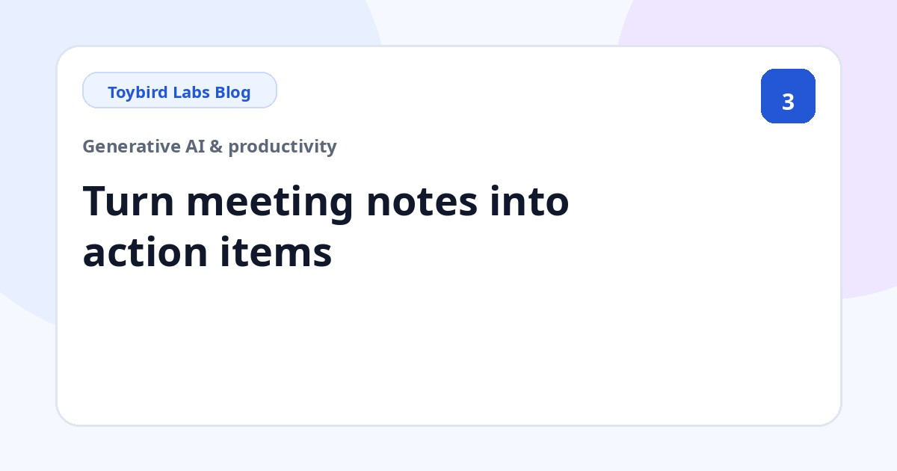
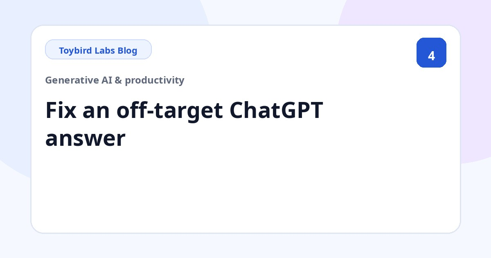
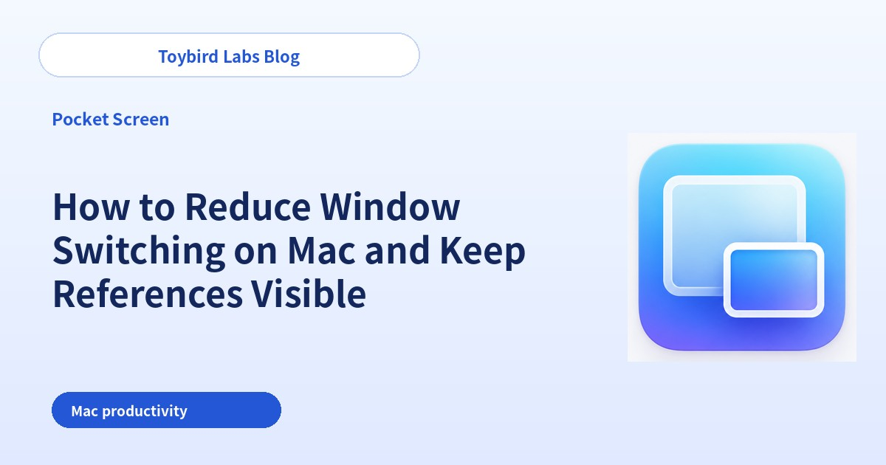
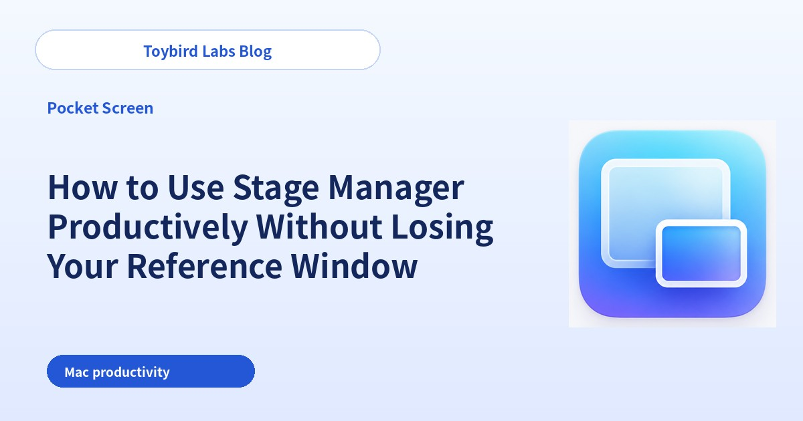
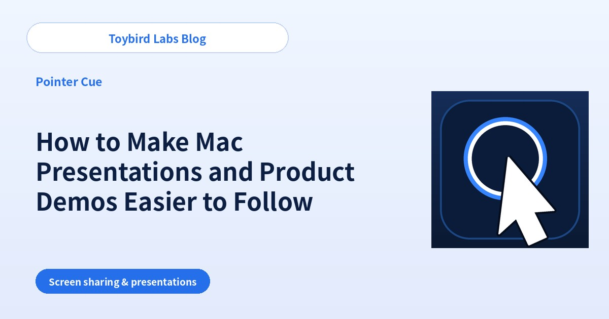

Toybird Labs Blog
Practical ideas for better work and learning
Step-by-step guides for using generative AI at work, plus practical tips for Mac and Windows apps and learning tools.
All articles
Start here

How to Use ChatGPT at Work: 5 Prompting Tips and 10 Practical Examples
Learn how to use ChatGPT at work with five practical prompting habits, two detailed examples and ten tasks you can try immediately.
Practical guides by task

How to Write a Polite Refusal Email with ChatGPT: Prompts and Examples
Create a clear, professional refusal email with ChatGPT by stating the request, the constraint, an alternative and the next action.

How to Turn Meeting Notes into Action Items with ChatGPT
Use ChatGPT to separate decisions, action items, owners, due dates and unresolved questions from rough meeting notes.

ChatGPT Answer Off Target? 6 Causes and Prompts to Fix It
Find out why a ChatGPT answer is too long, uses the wrong tone or adds unsupported facts, and fix it with focused follow-up prompts.

How to Write Customer Support Reply Emails with ChatGPT
Write accurate customer reply emails with ChatGPT by separating the customer message, verified facts, unknowns and the next action.

How to Make ChatGPT Ask Clarifying Questions Before Answering
Use prompts that make ChatGPT ask for missing information one question at a time, in a short list or with selectable options.

How to Summarize Long Documents with ChatGPT for Work
Summarize long documents with ChatGPT by defining the reader, decision, length, required evidence and handling of missing information.

How to Rewrite Text for Different Audiences with ChatGPT
Use ChatGPT to adapt the same facts for customers, executives, internal teams or beginners without changing the underlying meaning.

How to Compare Options and Build a Decision Table with ChatGPT
Compare products or services with ChatGPT by defining criteria, priorities, missing data and the conditions for a recommendation.

How to Practice Sales Calls with ChatGPT Role-Play
Set up a realistic ChatGPT sales role-play with a customer profile, one question at a time, objections and structured feedback.
Improve productivity on one MacBook screen

Single-Screen MacBook Productivity: Work with Reference Material in View
Learn how to work productively on one MacBook screen while keeping a PDF, webpage or chat in view. Compare tiling, Split View, Stage Manager and a floating reference window.

How to Reduce Window Switching on Mac and Keep References Visible
Reduce repeated window switching on Mac by keeping the PDF, webpage, chat or dashboard you need visible. Compare built-in layouts with an always-visible reference workflow.

How to Use Stage Manager Productively Without Losing Your Reference Window
Use Stage Manager on Mac without repeatedly losing a PDF, webpage or chat reference. Compare same-group layouts with a persistent floating reference across work sets.
Make remote meetings and product demos easier to follow

How to Make Screen Sharing Easier to Follow by Highlighting the Pointer
Help viewers follow the mouse pointer during Zoom, Teams or Google Meet screen sharing. Compare operating-system settings, presentation pacing and an on-demand pointer ring.

How to Make Mac Presentations and Product Demos Easier to Follow
Make Mac presentations and product demos easier to follow by clarifying which window matters now. Compare decluttering, single-window sharing and active-window emphasis.

How to Guide Attention During Screen Sharing: Pointer, Frame, and Active Window
Make screen-sharing guidance easier to follow by matching the cue to the target: pointer for a control, frame for an area and active-window focus for the current app.